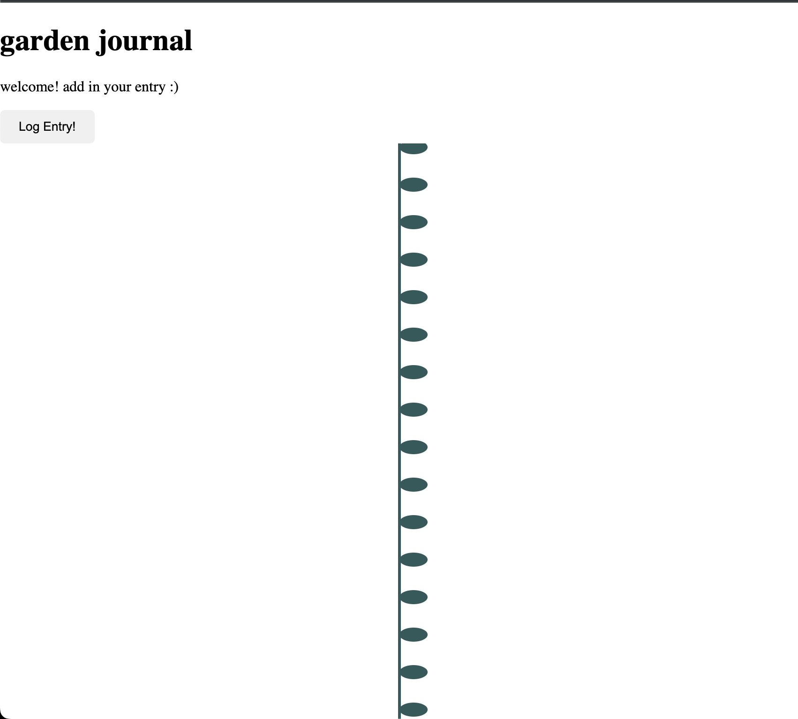

For the final project, I I wanted to create a visualized diary entry site, that would be a garden visualization based on user's emotions and activities throughout the day. After beginning to create my prototype, the scope changed a little. I had wanted to have a large variety of different graphics and animations (leaves, colors, flower type, length), but now that I have started the project, I want to just create one type of graphic, a plant leaf, that would grow in size each time a person added an entry.
Picking up from where I had left off with the prototype, I started to try and create the visualization aspect of this project.
I went ahead and made a very simple flower and replaced the circles that I had made before with those.
It looked jumbled, like the circles did, and I didn't quite like the look of the flower.
I figured that I would just take the stem portion of this flower, and have each input start off as one little leaf.
I also made sure to change the y value each iteration but not the x value, so that it would
stay in the same place and give off the perception that the leaf was growing with each new entry. I used arbitrary values at this point.

Next, I had to figure out how to separate out the whole month into even spaces, and placing a given day in the right space on the canvas. I did this by making use of the
different calls to time caught in my Date.now function in the database. I used these to get the month, so that I could create a calculation that would split up the canvas based
on the month ( March has 31 days and should be split evenly based on this).
Next, I wanted to try and get the leaf guy that I had created to be created each time an entry was made.
Finally, I got rid of the words because I wanted them to be revealed every time a mouse hovered over that spot. This was definitely the hardest portion to figure out of the whole thing.
It was difficult for me to figure out how to connect the entries to a mouseOver() event, and I couldn't figure out why it wasn't working. I tried lots of different variations of
a "mouseOver" function, but nothing seemed to work. In the end, I realized that a large portion of it was because I hadn't actually made a draw() function all this time, so I think that
the functions I was trying to use for P5.js functionality weren't working. At this point, using dist() was working and I was able to hover ovr a leaf for it to turn a different color.
I used this stackoverflow entry to help me figure out time stuff.